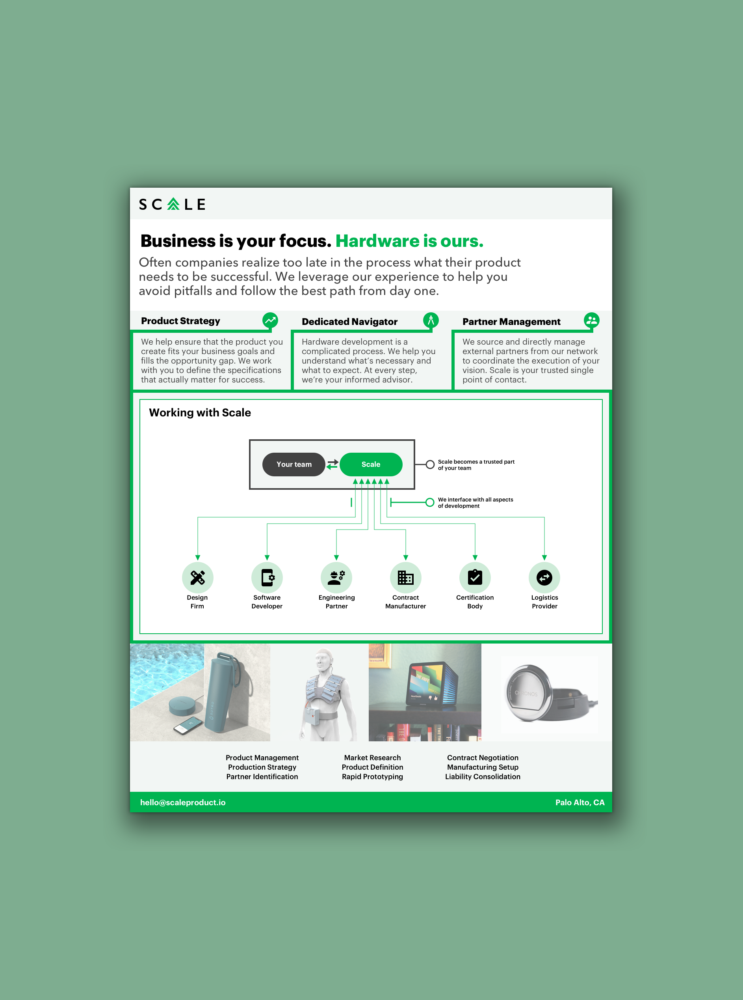
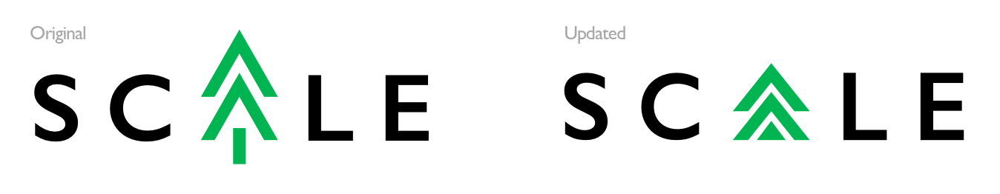
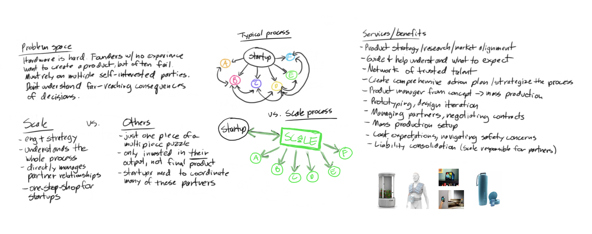
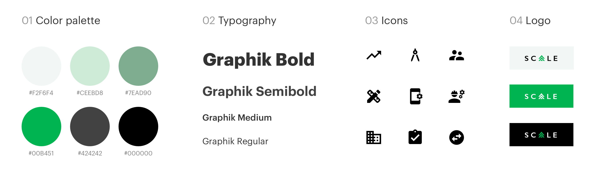

Content and visual design for Scale
Scale is a design and engineering consulting agency based in Palo Alto, California that helps hardware startups succeed from product strategy through to mass production. I designed Scale's informational one pager and refined their company logo.
The Process
Scale originally came to me wanting a quick-and-dirty logo refresh. After a few iterations, we arrived at something a little more subtle and visually compact.
Shortly after, the company asked me to design a one-page PDF communicating the value that Scale brings to hardware startups. As this would be the first written or visual presentation of what Scale offers, I began meeting with the founders to understand their business model, target clients, the kind of work they do for startups, and what makes them stand out among competitors.
As we worked on creating a content strategy, it became clear that Scale’s unique working relationship with startups would be crucial to convey: While typical firms deliver on just a small piece of the development cycle, Scale oversees the entire project from start to finish, directly managing necessary third party partners on their client’s behalf.
Because Scale cared most about content at this stage, I kept the visual branding simple by using icons from material.io and creating a straightforward color palette based on the original logo green.
